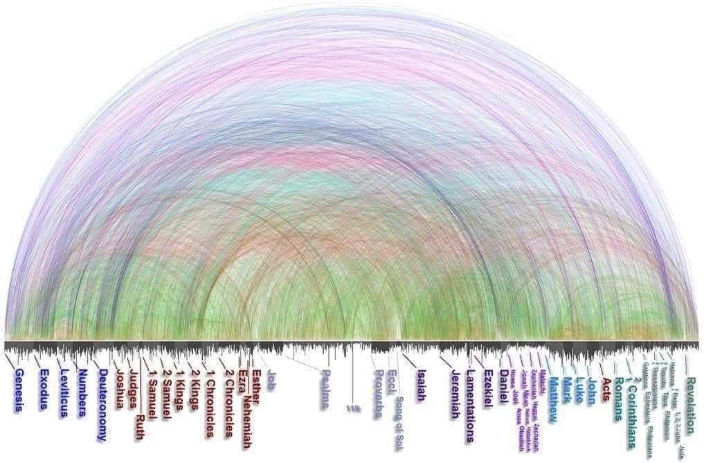

All posts
Every cross-reference in Scripture, arced from Genesis to Revelation. The Bible interpreting itself, visually.
Short reflections on Scripture, physics, and the space where they meet.

Comments